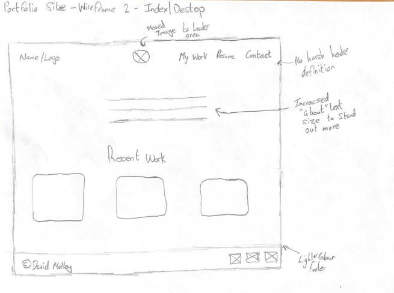
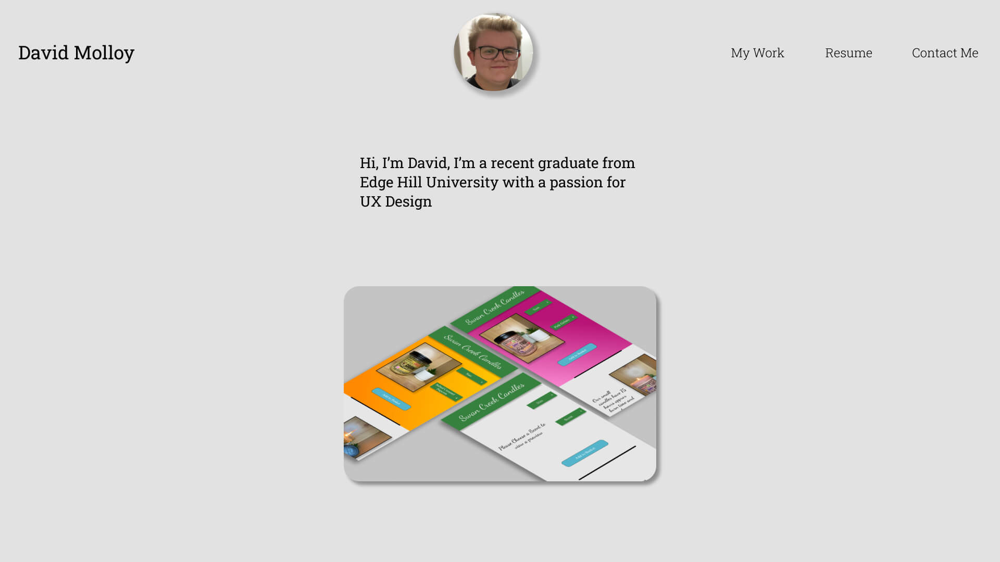
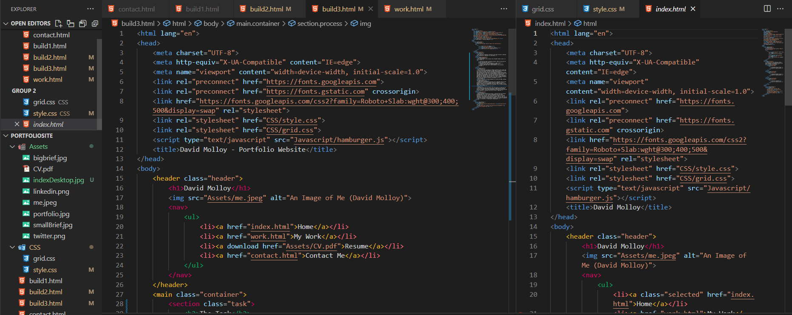

The Task
The task was to develop a portfolio site that was able to showcase work completed for employers to view easily.
The Requirements
The requirments of this project were straight forward, below is a list of them
- Site must be able to showcase projects taken on and show the process followed with them
- Provide an easy way for employers to make contact
- Should focus on the work being presented.
- Present knowledge and an understanding of the processes followed
The Process
The process began by looking at example portfolio sites within the ux field to gain an understanding of what people already in the field were trying to present, this was followed up reviewing job specifications and noting which skills employers wanted and how often they were asked for. With this an understanding of what was required on the website was developed, from there iterative wireframing was completed and high-fidelity mock-ups were produced. After satisfactory mock-ups were produced, the site was built, this was done using pure HTML and CSS, partially because that is all that is needed to showcase my work but also where my technical knowledge is up to.
Wireframing
Here is the final wireframe produced for the My work page, showing the layout chosen.
High-Fidelity Mockups
Producing the high-fidelity mock-ups was an important step as this allowed me to see how well elements would fit together as well as produce a guide for the typography and colour usage followed, it was important to ensure the website was accessible, this is why the colours chosen, were chosen.
Build
The build phase was much harder than anticipated as producing the correct code that would match the designs already made was proving difficult, however, with some determination and help the build was able to be completed to showcase the work off that is required.
The Solution
Having followed through this process, I believe that the proposed solution meets all of the requirements that were identified and because of this I feel like the project can be considered a success in what it set out to do.